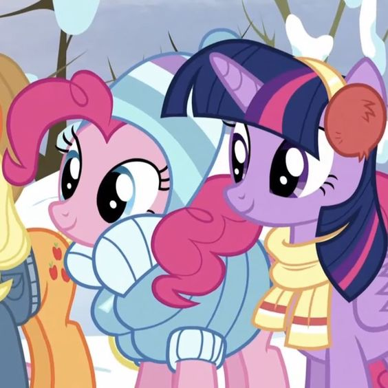

My Little Pony
На главную


Главные персонажи
Твайлайт Спаркл
Пони-единорог сиреневого цвета, с гривой тёмно-синего цвета и розово-фиолетовыми прядями. Её знак отличия — розовая шестиконечная звезда в окружении пяти маленьких белых звёзд. Является бывшей лучшей ученицей Принцессы Селестии и главной героиней сериала.
Спайк
Маленький фиолетовый дракончик; Верный друг и помощник Сумеречной Искорки. Появился на свет из яйца, которое Искорка должна была заставить вылупиться на вступительном экзамене в школу магии Кантерлота.
Рарити
Единорог светло-серого цвета, с гривой пурпурно-синего цвета. Её знак отличия — три ромбовидных бриллианта. Живёт она в Понивилле и является одной из главных героинь в сериале. Она работает как модным дизайнером, так и швеёй в её собственном магазине Бутик Карусель. Её характерной чертой является элегантность. Рарити представляет элемент щедрости.
Эпплджек
Земная пони. Она живёт и работает на ферме «Яблочная Аллея». Эпплджек представляет собой элемент честности. Она – надёжная и верная пони, которая всегда готова помочь всем, кто в этом нуждается.

Пинки Пай
Ярко-розовая земная пони с тёмно-розовой гривой. Её знак отличия — три воздушных шарика. Пинки Пай живёт и работает в «Сахарном Дворце» — кондитерской в Понивилле. Пинки Пай обожает вечеринки и устраивает их для других пони. Она знает всех в городе и помнит все дни рождения. По характеру Пинки Пай неудержима, полна энтузиазма, беззаботна, болтлива, весела и смешлива. Пинки Пай воплощает элемент смеха.

Радуга Дэш
Небесно-голубая пони-пегас с радужной гривой и хвостом. Она ответственна за поддержание погоды и расчистку неба от облаков в Понивилле. Радуга Дэш представляет элемент верности.

Флаттершай
Пони-пегас. Она живет в маленьком доме возле Вечнозелёного леса и заботится о животных. Флаттершай воплощает элемент доброты.